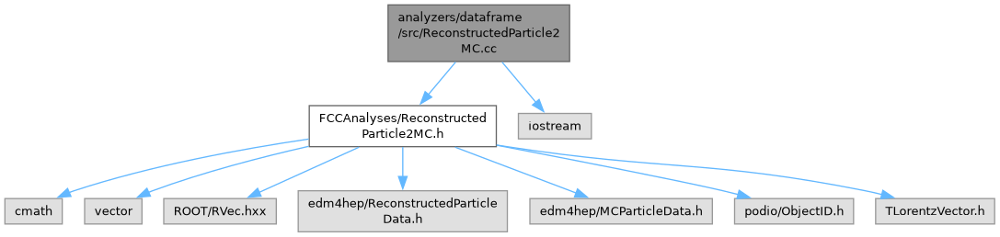

ReconstructedParticle2MC.cc File Reference
Include dependency graph for ReconstructedParticle2MC.cc:

Namespaces | |
| namespace | FCCAnalyses |
| FCC analyzers collection. | |
| namespace | FCCAnalyses::ReconstructedParticle2MC |
Functions | |
| ROOT::VecOps::RVec< float > | FCCAnalyses::ReconstructedParticle2MC::getRP2MC_p (ROOT::VecOps::RVec< int > recin, ROOT::VecOps::RVec< int > mcin, ROOT::VecOps::RVec< edm4hep::ReconstructedParticleData > reco, ROOT::VecOps::RVec< edm4hep::MCParticleData > mc) |
| Return the D0 of a track to a reconstructed particle. | |
| ROOT::VecOps::RVec< TLorentzVector > | FCCAnalyses::ReconstructedParticle2MC::getRP2MC_tlv (ROOT::VecOps::RVec< int > recin, ROOT::VecOps::RVec< int > mcin, ROOT::VecOps::RVec< edm4hep::ReconstructedParticleData > reco, ROOT::VecOps::RVec< edm4hep::MCParticleData > mc) |
| Return the D0 of a track to a reconstructed particle. | |
| ROOT::VecOps::RVec< float > | FCCAnalyses::ReconstructedParticle2MC::getRP2MC_px (ROOT::VecOps::RVec< int > recin, ROOT::VecOps::RVec< int > mcin, ROOT::VecOps::RVec< edm4hep::ReconstructedParticleData > reco, ROOT::VecOps::RVec< edm4hep::MCParticleData > mc) |
| Return the D0 of a track to a reconstructed particle. | |
| ROOT::VecOps::RVec< float > | FCCAnalyses::ReconstructedParticle2MC::getRP2MC_py (ROOT::VecOps::RVec< int > recin, ROOT::VecOps::RVec< int > mcin, ROOT::VecOps::RVec< edm4hep::ReconstructedParticleData > reco, ROOT::VecOps::RVec< edm4hep::MCParticleData > mc) |
| Return the D0 of a track to a reconstructed particle. | |
| ROOT::VecOps::RVec< float > | FCCAnalyses::ReconstructedParticle2MC::getRP2MC_pz (ROOT::VecOps::RVec< int > recin, ROOT::VecOps::RVec< int > mcin, ROOT::VecOps::RVec< edm4hep::ReconstructedParticleData > reco, ROOT::VecOps::RVec< edm4hep::MCParticleData > mc) |
| Return the D0 of a track to a reconstructed particle. | |
| ROOT::VecOps::RVec< float > | FCCAnalyses::ReconstructedParticle2MC::getRP2MC_pdg (ROOT::VecOps::RVec< int > recin, ROOT::VecOps::RVec< int > mcin, ROOT::VecOps::RVec< edm4hep::ReconstructedParticleData > reco, ROOT::VecOps::RVec< edm4hep::MCParticleData > mc) |
| Return the D0 of a track to a reconstructed particle. | |
| ROOT::VecOps::RVec< float > | FCCAnalyses::ReconstructedParticle2MC::getRP2MC_charge (ROOT::VecOps::RVec< int > recin, ROOT::VecOps::RVec< int > mcin, ROOT::VecOps::RVec< edm4hep::ReconstructedParticleData > reco, ROOT::VecOps::RVec< edm4hep::MCParticleData > mc) |
| Return the D0 of a track to a reconstructed particle. | |
| ROOT::VecOps::RVec< float > | FCCAnalyses::ReconstructedParticle2MC::getRP2MC_mass (ROOT::VecOps::RVec< int > recin, ROOT::VecOps::RVec< int > mcin, ROOT::VecOps::RVec< edm4hep::ReconstructedParticleData > reco, ROOT::VecOps::RVec< edm4hep::MCParticleData > mc) |
| Return the D0 of a track to a reconstructed particle. | |
| ROOT::VecOps::RVec< int > | FCCAnalyses::ReconstructedParticle2MC::getRP2MC_index (ROOT::VecOps::RVec< int > recin, ROOT::VecOps::RVec< int > mcin, ROOT::VecOps::RVec< edm4hep::ReconstructedParticleData > reco) |
| Return the D0 of a track to a reconstructed particle. | |
| ROOT::VecOps::RVec< ROOT::VecOps::RVec< int > > | FCCAnalyses::ReconstructedParticle2MC::getRP2MC_indexVec (ROOT::VecOps::RVec< int > recin, ROOT::VecOps::RVec< int > mcin, ROOT::VecOps::RVec< edm4hep::ReconstructedParticleData > reco) |
| Return the D0 of a track to a reconstructed particle. | |
| ROOT::VecOps::RVec< int > | FCCAnalyses::ReconstructedParticle2MC::getRP2MC_index_test (ROOT::VecOps::RVec< int > recin, ROOT::VecOps::RVec< int > mcin, ROOT::VecOps::RVec< edm4hep::ReconstructedParticleData > reco, ROOT::VecOps::RVec< edm4hep::MCParticleData > mc, ROOT::VecOps::RVec< int > parents) |
| Return the D0 of a track to a reconstructed particle. | |
| ROOT::VecOps::RVec< int > | FCCAnalyses::ReconstructedParticle2MC::getRP2MC_parentid (ROOT::VecOps::RVec< int > recin, ROOT::VecOps::RVec< int > mcin, ROOT::VecOps::RVec< edm4hep::ReconstructedParticleData > reco, ROOT::VecOps::RVec< edm4hep::MCParticleData > mc, ROOT::VecOps::RVec< int > parents) |
| Return the D0 of a track to a reconstructed particle. | |
| std::vector< edm4hep::ReconstructedParticleData > | FCCAnalyses::ReconstructedParticle2MC::selRP_ChargedHadrons (ROOT::VecOps::RVec< int > recind, ROOT::VecOps::RVec< int > mcind, ROOT::VecOps::RVec< edm4hep::ReconstructedParticleData > reco, ROOT::VecOps::RVec< edm4hep::MCParticleData > mc) |
| select ReconstructedParticles matched with a MC charged hadrons | |
| ROOT::VecOps::RVec< edm4hep::ReconstructedParticleData > | FCCAnalyses::ReconstructedParticle2MC::selRP_matched_to_list (ROOT::VecOps::RVec< int > mcParticles_indices, ROOT::VecOps::RVec< int > recind, ROOT::VecOps::RVec< int > mcind, ROOT::VecOps::RVec< edm4hep::ReconstructedParticleData > reco, ROOT::VecOps::RVec< edm4hep::MCParticleData > mc) |
| select ReconstructedParticles matched to the (stable) MC particles whose indices are passed in a list | |
| int | FCCAnalyses::ReconstructedParticle2MC::getTrack2MC_index (int track_index, ROOT::VecOps::RVec< int > recind, ROOT::VecOps::RVec< int > mcind, ROOT::VecOps::RVec< edm4hep::ReconstructedParticleData > reco) |
| return the index of the MC particle that is associated to a given track (via the track-reco association) | |
Generated by